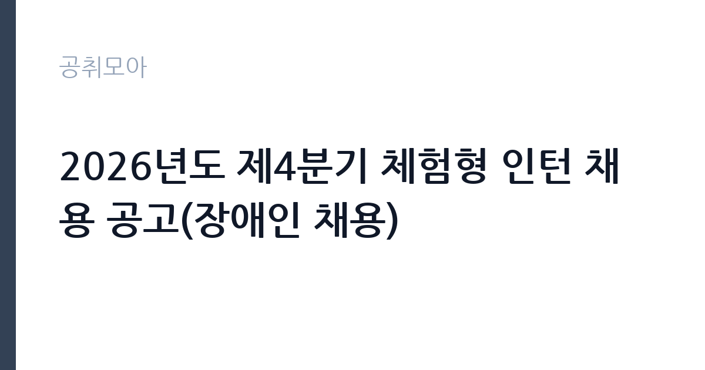

[공공기관] 2026년도 제4분기 체험형 인턴 채용 공고(장애인 채용)
한국세라믹기술원 · 경남 · 마감 2026-10-29 (D-15) · 출처 잡알리오

한눈에 보는 모집 조건
| 기관 | 한국세라믹기술원 |
|---|---|
| 공고명 | 2026년도 제4분기 체험형 인턴 채용 공고(장애인 채용) |
| 고용형태 | 청년인턴(체험형) |
| 근무지 | 경남 |
| 게시일 | 2026-10-15 |
| 마감일 | 2026-10-29 (D-15) |
지원자격, 이렇게 읽으세요
- 공공기관 채용공시
- 세부 조건은 원문 공고문 확인
지원자격은 만 34세 이하이면서 장애인고용촉진 및 직업재활법 시행령에 따른 장애인이어야 합니다. 기술원 인사규정 제7조의 결격사유에 해당하지 않아야 하고, 임용 예정일에 즉시 근무가 가능해야 합니다. 채용 분야별 자격과 가점 자격은 공고문에서 따로 정하므로 반드시 원문을 확인하시기 바랍니다. 함정은 연령 상한(만 34세 이하)과 장애인 등록 요건을 동시에 충족해야 한다는 점으로, 서류 접수 전에 장애인 등록 증빙 서류를 준비하시기 바랍니다.
이 공고의 포인트
이 공고의 포인트는 장애인 전형 체험형 인턴이라는 점입니다. 전형 대상이 한정되어 일반 전형보다 경쟁 범위가 좁고, 세라믹 분야 정부출연연구기관의 실무를 경험할 수 있습니다. 체험형 인턴 경력은 이후 공공기관 채용의 가점이나 경력으로 활용할 수 있어 청년 구직자에게 실속이 있습니다. 같은 시기에 인턴사무원과 인턴연구원, 위촉직, 정규직 채용이 함께 열려 있으니 본인 조건에 맞는 트랙을 골라 지원하는 전략이 필요합니다.
전형은 어떻게 진행되나
세부 전형 단계는 원문 공고문에서 확인하셔야 합니다. 체험형 인턴 채용은 일반적으로 서류심사와 면접으로 진행되며, 장애인 전형은 증빙 서류 검증이 함께 이뤄집니다. 채용 분야별 자격과 가점 자격이 공고문에 정해져 있으니 본인 해당 여부를 먼저 대조하시기 바랍니다. 임용 예정일은 최종합격자 선발 후 협의하므로, 합격 후 출근 일정 조율이 가능합니다.
원문에서 확인한 전형 방식
- 연령이 만 34세 이하인 자 - 장애인고용촉진 및 직업재활법 시행령에 따른 장애인 - 기술원 「인사 규정」 제7조(결격사유)에 해당하지 않는 자 - 임용 예정일에 즉시 근무가 가능한 자(임용 예정일은 최종합격자 선발 후 협의할 예정) - 채용 분야별 자격과 가점 자격은 공고문 참고
이런 분께 추천해요
- 공공기관 실무 경험을 쌓고 싶은 만 34세 이하 장애인 구직자
- 세라믹과 소재, 연구지원 분야에 관심 있는 청년
- 이후 정규직 채용에 도전하기 전 기관 경험을 쌓고 싶은 분
지원 전 체크리스트
- 장애인 등록 증빙 서류를 준비했습니다
- 만 34세 이하 연령 요건을 충족하는지 확인했습니다
- 채용 분야별 자격과 가점 자격을 원문에서 대조했습니다
- 임용 예정일 즉시 근무 가능 여부를 확인했습니다
모집 일정과 제출 타이밍
마감은 10월 29일로, 같은 기관의 제4분기 채용(인턴과 위촉직, 정규직)이 같은 날 함께 마감됩니다. 여러 트랙에 중복 지원이 가능한지는 원문에서 확인하시기 바랍니다. 서류 접수 후 면접 일정이 이어지므로 11월 초 일정은 비워 두는 것이 좋습니다. 임용 예정일은 합격 후 협의이므로 학업이나 기존 일정을 조정할 여유가 있습니다.
직무 이해하기: 공공기관
체험형 인턴은배치 부서의 실무 보조와 행정 지원, 자료 조사와 정리 등을 맡으며 연구 현장과 행정 현장을 두루 경험합니다. 한국세라믹기술원은 광전자와 에너지환경, 기계구조, 바이오, 나노융복합 소재와 전통세라믹, 세라믹 공정기술을 연구하는 기관으로, 인턴은 시험분석 지원과 기업지원 업무 보조를 맡는 경우가 많습니다. 장애인 전형 배치 부서와 직무는 공고문의 분야별 안내에서 확인하시기 바랍니다.
자기소개서 작성 팁
체험형 인턴 자기소개서는 지원 동기와 배우고 싶은 점을 구체적으로 쓰는 것이 핵심입니다. 세라믹기술원의 연구 분야 중 관심 있는 영역을 하나 짚고, 그 분야에서 어떤 실무를 배우고 싶은지 쓰시기 바랍니다. 장애인 전형의 경우 장애를 극복한 서사보다 직무 수행 가능성과 성실함을 보여주는 것이 중요합니다. 가점 자격이 있다면 증빙과 함께 명확히 기재하시기 바랍니다.
면접 준비 포인트
면접에서는 지원 동기와 직무 이해도, 조직 적응력을 묻는 경우가 많습니다. 한국세라믹기술원이 세라믹 분야 종합연구기관이라는 점을 알고 있다는 점을 보여주시기 바랍니다. 체험형 인턴은 배우려는 자세와 성실함이 핵심 평가 요소이므로, 짧은 근무 기간에 무엇을 얻고 싶은지 구체적으로 답하시기 바랍니다. 즉시 근무 가능 여부와 근무지(진주 본원 등) 출근 가능 여부도 명확히 답하시기 바랍니다.
급여·근무조건 읽는 법
이 공고문에는 인턴 보수 금액이 명시되어 있지 않으므로, 정확한 보수는 원문 공고문에서 확인하셔야 합니다. 공공기관 체험형 인턴 보수는 통상 월 보수제로 운영되며 4대보험이 적용됩니다. 세라믹기술원 정규직의 대졸 초임은 약 3,183만원 수준으로 알려져 있으나(잡코리아 기업정보 기준, 공식 공시 아님), 인턴 보수는 이와 별도로 공고문에 정해지므로 혼동하지 마시기 바랍니다. 실수령액은 세전 보수에서 4대보험 본인부담금과 소득세를 제외한 금액이 됩니다.
자주 묻는 질문
- 누가 지원할 수 있나요?
만 34세 이하이면서 장애인고용촉진법상 장애인에 해당하고, 기술원 인사규정 결격사유에 해당하지 않으며 임용 예정일 즉시 근무가 가능한 자입니다. - 어디서 접수하나요?
한국세라믹기술원 채용 홈페이지(kicet.recruiter.co.kr)에서 접수하며 마감은 10월 29일입니다. - 정규직 채용과 함께 지원할 수 있나요?
같은 시기 정규직과 위촉직, 인턴 채용이 함께 진행됩니다. 트랙 간 중복 지원 가능 여부는 원문 공고문에서 확인하시기 바랍니다.
함께 보면 좋은 공고
[공공기관] 2026년 한국도로공사 교통량 조사 기간제 근로자(사무원) 채용공고 — 마감 2026-10-28[공공기관] 2026년도 제4분기 체험형 인턴 채용 공고(인턴사무원) — 마감 2026-10-29[공공기관] 2026년도 제4분기 체험형 인턴 채용 공고(인턴연구원) — 마감 2026-10-29출처: 잡알리오 공개정보를 바탕으로 공취모아가 정리한 안내글입니다. 모집 조건·일정은 변경될 수 있으니 지원 전 반드시 원문 공고문을 확인하세요. 본 글은 정보 제공용이며 합격을 보장하지 않습니다.